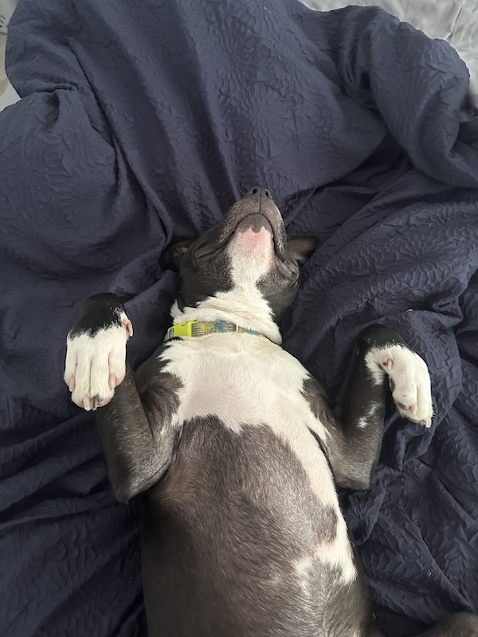

About Cosmo

Cosmo likes playing fetch, trail walks, quiet naps, and meeting friendly people at his own pace.
Favorite Things
- Watching wildlife out the window
- Eating treats of any kind
- Playing fetch with Chuck-it balls
Daily Routine
- Start the morning with a neighborhood walk.
- Eat breakfast and check the yard for deer.
- Practice a short training session with treats.
- Take a nap in a sunny spot.
Training Site Goals
This page will grow over the cohort as we practice HTML structure, CSS, layout, and JavaScript. For now, the goal is to write clear, readable HTML that uses headings, paragraphs, lists, links, and images.
Helpful Links
Cosmo's story is a reminder that local shelters help dogs find safe, loving homes. Learn more about the Charlottesville-Albemarle SPCA and the pets they support.